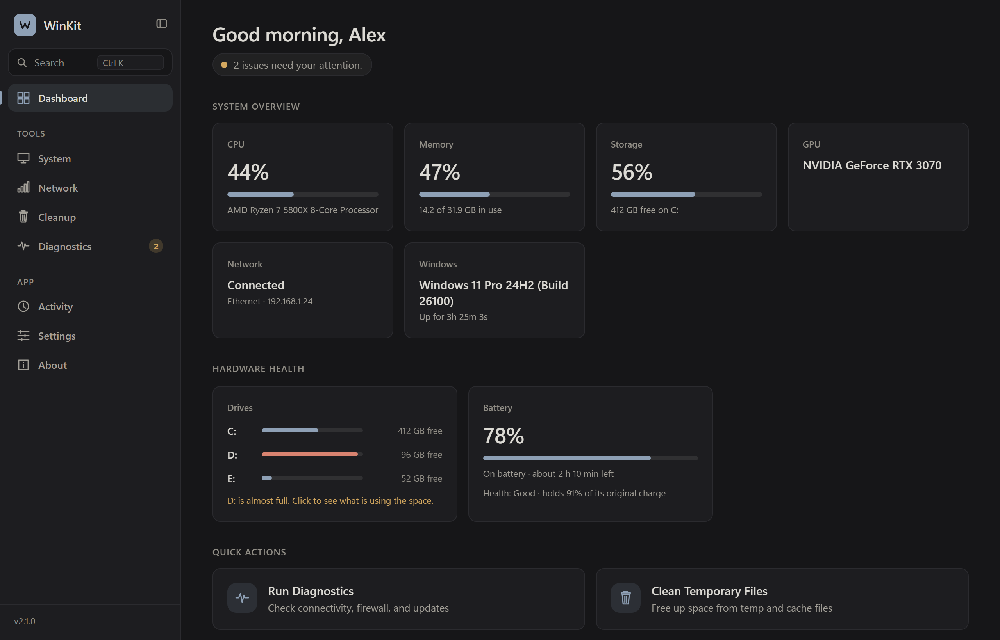
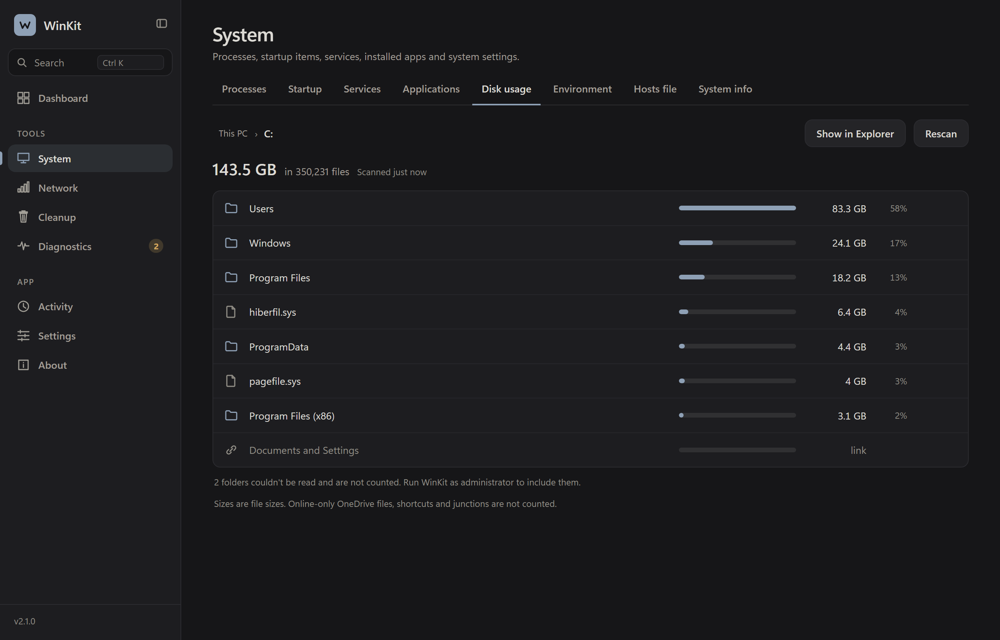
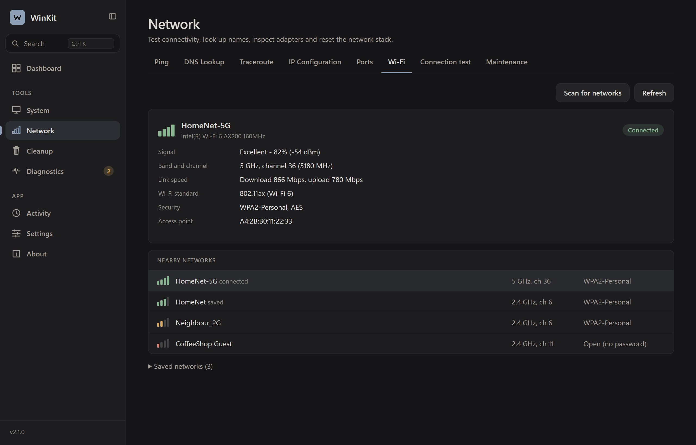
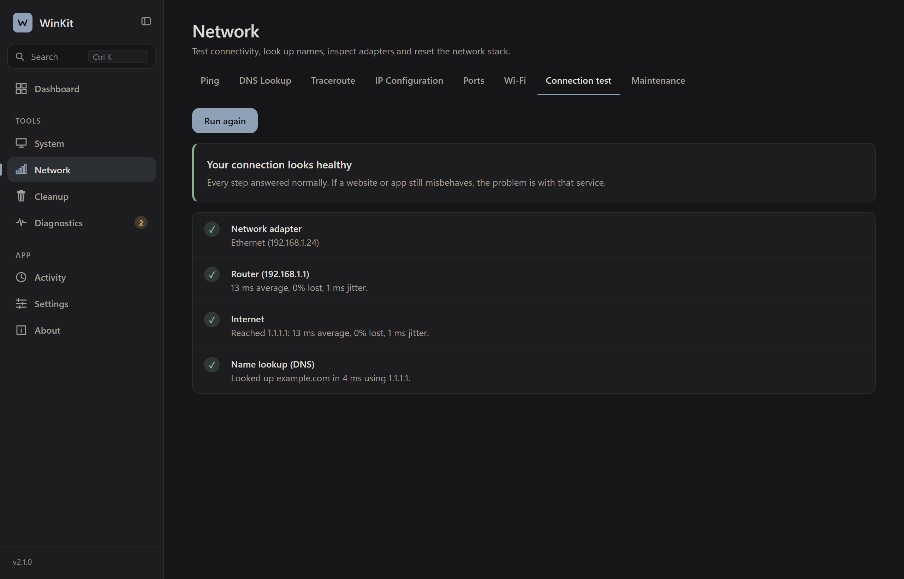
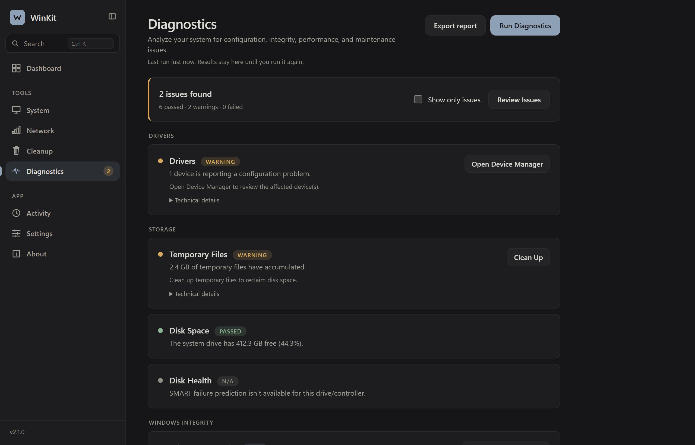
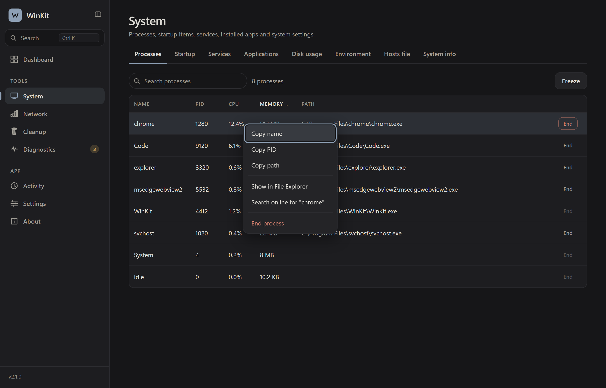
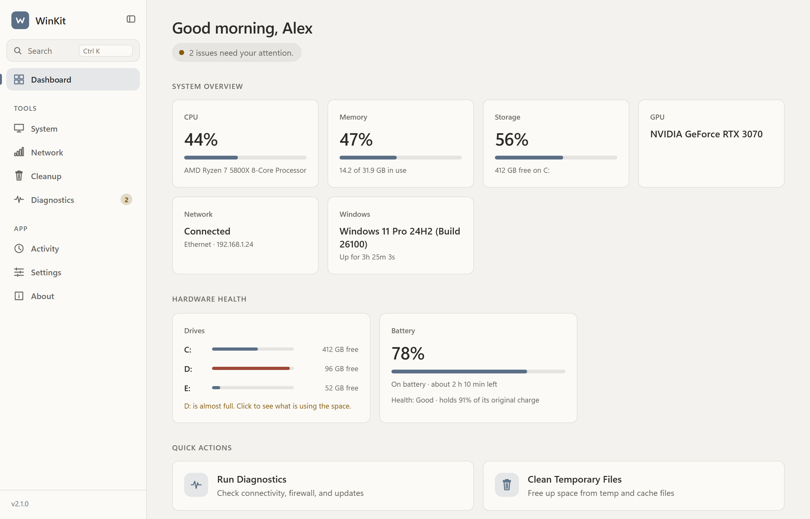

Disk usage
Pick a drive and click through the biggest folders and files to see where your space went. It only reads. It never deletes.
Windows administration, without the clutter.
A small, calm toolkit to see what your PC is doing, find what is wrong and fix it. Disk usage, Wi-Fi, diagnostics, cleanup and more, in one file under 1 MB.
New in 2.1.0
Pick a drive and click through the biggest folders and files to see where your space went. It only reads. It never deletes.
Signal, channel, speed and security, plus a one-click test that says whether the problem is your PC, your router, your provider or DNS.
Save a plain-text summary of your PC to send to whoever is helping you. Names and addresses stay out unless you tick a box.
Free space for every drive and, on laptops, battery charge and how much of its original capacity is left.
Every open port and connection with the program that owns it. See what is using port 3000 or talking to the internet.
Copy, show in folder, search online and end process, right where you need them. Click an address or value to copy it.
Tour







Features
CPU, memory, GPU, storage, network, Windows build and uptime in one place, with meters that change colour as they fill. Instead of Settings, Task Manager and winver.
Eleven checks across connectivity, drivers, disk health, services and Windows Update, reported in plain language rather than error codes, with a one-click fix wherever one exists.
A live process list with real memory and CPU for every process, sorted by memory like Task Manager, plus services and startup items in the same window.
See what is taking your space, drive by drive and folder by folder. Junctions and cloud-only files are not counted twice, and the scan can be cancelled any time.
Ping, traceroute, DNS lookup, IP configuration, open ports, Wi-Fi details and a connection test, next to maintenance actions like flushing DNS and resetting adapters.
Scan temporary files, the thumbnail and Windows Update caches and the Recycle Bin, see what each category holds, and reclaim only the space you choose to.
Installed applications with clean uninstall, an environment variables editor and a hosts file editor, elevated only when a task needs it.
One plain-text summary of your PC for a friend, a forum or a support desk. Computer name, addresses and Wi-Fi names are left out unless you include them.
Quick Open jumps to any page or action. Every list is searchable, values copy with a click, and the window reopens exactly where you left it.
Principles
The whole app is one executable under 1 MB. It idles at almost no CPU, and stops polling entirely while minimised.
Settings and history stay on your machine under %LOCALAPPDATA%\WinKit. No account, no cloud sync, no telemetry. Crash reports are only sent if you press Send.
Every action is a real, explainable operation. Anything destructive asks first, and WinKit never follows a link or junction out of the folder it was asked to clean.
Keyboard
Made with
C++·Windows API·WebView2·HTML / CSS / JS
FAQ
WinKit is not code-signed yet, so Windows SmartScreen may show an "unknown publisher" notice the first time you run it. The source code is public on GitHub, and every download has a SHA-256 checksum you can verify below.
No. It starts as a normal app. A few actions, such as resetting the network stack or editing the hosts file, ask Windows for approval when you use them. Checks that need those rights say so instead of guessing.
Nothing on its own, apart from an optional check for new versions against GitHub Releases, which you can turn off. There is no account and no telemetry.
The portable file runs from anywhere and leaves nothing behind. The installer adds a Start Menu shortcut and an uninstaller, and both update themselves from GitHub Releases after a checksum check.
WinKit's interface uses the Microsoft Edge WebView2 Runtime, which Windows 11 and current Windows 10 already include. If yours is missing, WinKit offers the official download link.
Settings, themes and history live in %LOCALAPPDATA%\WinKit. Delete that folder to remove everything. The installer's uninstaller also removes the start-with-Windows entry.
It covers a lot of the same ground in a calmer window, and adds disk usage, Wi-Fi, diagnostics and a health report. It does not try to be a performance profiler.
Download
One small file. Download and run it. Nothing is installed, nothing is registered.
Download .exe0.83 MB · or as .zip
Installs to Program Files with a Start Menu shortcut, an uninstaller and in-app updates.
Download .exe2.4 MB
Check a download in PowerShell with Get-FileHash .\WinKit-2.1.0-portable.exe and compare it with the matching line below.
dc7556eaf011f5ae21077e9b7baa79f648977956d10eff28c1319d096a380664 WinKit-2.1.0-portable.exe 992f0cc654523eb7e0bb00f880fd2cd42e9b94bbc6af6626416dab3e809511d6 WinKit-2.1.0-portable.zip ff6c639e0f85cfd15d476b01a353abe0d4d509fc92b2a3b7bb2baf5b3d60ff0e WinKitSetup-2.1.0.exe